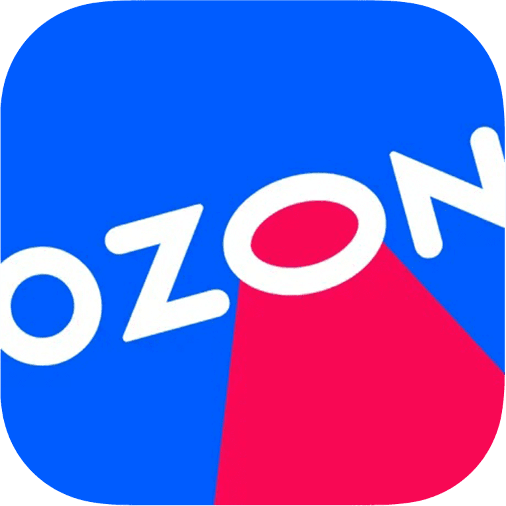
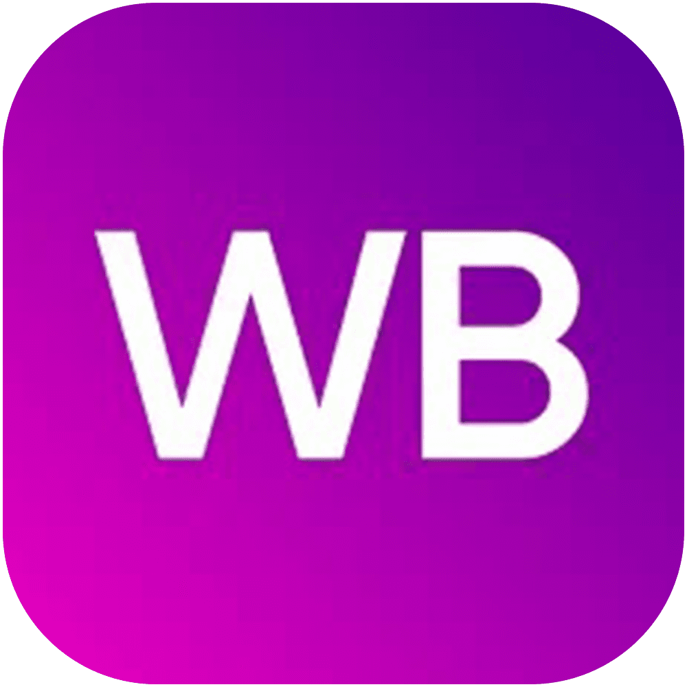

Обо мне
Привет! Я разработчик .NET C#, PHP, Android(Java) 🦊💻
Мне 24 года. Верчусь в сфере IT еще со школьных лет.
Живу во Владимирской обл. Готов к переезду.
Связаться со мной в TelegramНавыки
💻 .NET C# 🐘 PHP 🔁 Rest API / SOAP 🎨 CSS, SCSS, HTML 🟨 JavaScript 🔷 Vue 🔍 jQuery 🐧Linux CentOS/Ubuntu/Debian CMD 🌐 Full-Stack разработка 📊 SQL, MySQL, PostgreSQL, ORM, MariaDB 💻 Android(Java) 📝 Swagger 🌐 Apache 🏢 Bitrix 🔀 Git ➕ SugarORM ➕ VK API ➕ Telegram API ➕ Picasso ➕ WinUI3 ➕ sqlite-net-pcl ⚠ Если я чего-то не умею - значит придётся научиться. 🤖 API MarketPlace и... разберёмся, прочитаем документациюХочу освоить / осваиваю
💻 ASP.NET 🎪 Laravel 🎪 Symfony 🔄 Yii2 🏢 Bitrix24 🐳 Docker ✔️ PHPUnit 🧪 CodeceptionОпыт работы
🦊 Интернет магазин Здоровеево
📅 2020 - настоящее время
🔧 Сопровождение и доработка конфигураций CRM Bitrix
🔧 Разработка фирменных android и IOS приложений.(JAVA, SWIFT)
🔧 Разработка и защита базы данных (MSQL)
 
🔧 (PHP)Интеграция Маркетплейсов: Разработал код для эффективной интеграции различных маркетплейсов.
(OZON, WB, YandexMarket, СберМегаМаркет, 5Post) да, 5Post не маркетплейс
🔧 (PHP)Автоматизация через API: Использовал открытые API для автоматизации процессов, включая получение заказов, обновление базы данных, управление остатками, ценами и описаниями товаров.
🔧 (PHP)Система Печати Этикеток: Создал систему, которая автоматизирует печать этикеток для заказов, работает с принтерами и штрих-кодами, отслеживает информацию о товаре и его сборщике. Эта система может использовать этикетки из интернет-магазина или создавать собственные, что упрощает обработку заказов.
🔧 (PHP, HTML, JS, CSS)Аналитика: Создал множество различных автоматических таблиц для аналитики данных в базе данных и о происходящем на маркетплейсах.
🔧 (Android[Java]/iOS [C# Xamarin]))Мобильное приложение: Создал фирменное мобильное приложение для интеграции с сайтом заказчика.
VK M
Music M (VK M) - это не просто pet-проект, это моя страсть и энтузиазм, которые превратились в реальность. В данный момент он находится в активной стадии разработки.
Мне казалось, что процесс прослушивания музыки из ВКонтакте становится все более обременительным. Открытие браузера, долгая загрузка страницы ВК, переход в раздел “Моя музыка” - все это отнимает слишком много времени и энергии. Именно поэтому я решил взять инициативу в свои руки и начал разработку собственного приложения.
Изначально я планировал создать небольшое приложение, предназначенное исключительно для прослушивания моей музыки. Однако, по мере разработки, проект начал превращаться в нечто большее, расширяя свои границы и возможности.
Приложение основано на WinUI3 и написано на языке C#, что обеспечивает его высокую производительность и удобство использования. Это сочетание технологий позволяет мне создавать качественное и надежное приложение, которое отвечает всем моим требованиям.
Для работы приложения я использую API VKNet. Это обеспечивает надежную и стабильную работу приложения, позволяя мне наслаждаться музыкой без лишних забот.
Таким образом, Music M (VK M) - это не просто приложение, это мое видение того, как должен выглядеть идеальный музыкальный плеер для ВКонтакте.
(Подробнее здесь)
.png)
.png)
.png)
.png)
.png)
.png)
Telegram API
Я занимаюсь разработкой ботов для Telegram. К сожалению, я не могу показать, что находится “под капотом”, но уверяю вас, там всё в порядке.
Это не просто эхо-боты. Это полноценные боты с базой данных, функцией взаимодействия и многоуровневым меню.
В видео демонстрируется мой бот, который я разработал для личного использования. Его задача - автоматически создавать посты и предлагать мне их для последующего редактирования и автопубликации в сообщество ВКонтакте.
Если вы хотите опробовать бота, напишите мне в Telegram.
Android
Моё первое, достаточно объемное приложение написано под Android для интернет-магазина Здоровеево.
Ранее Здоровеево уже купили у сторонней фирмы приложение для своего интернет-магазина. Но в процессе выявились проблемы в использовании, недоработки, косяки, вылеты и так далее.
Я в тот момент выбирал дипломный проект. И это приложение им и стало.
Как оказалось, исходников у фирмы не осталось, ключей для публикации в Google Play темболее, было принято решение заняться разработкой с нуля.
Я тогда был едва-ли знаком с Android разработкой. Но... Через месяц у меня уже был костяк приложения, еще через 2 добавлены разные разделы, корзина, избранное, новости и так далее.
В общем, примерно за 4 месяца приложение было польностью готово, исправлены косяки, баги, и даже исправлены очень редкие краши, возникающие на малом количестве устройств из-за устаревшего WebView
После Android мне выделили MacBook и сказали сделать приложение и для IOS. Благодаря опыту разработки под Android, возможных проблем и так далее, приложение под iOS было готово уже за 3 месяца и отправлено в AppStore
Через пару лет магазином было принято решение перейти на WebView приложение, из-за чего Вы сейчас можете наблюдать в App Store и Google Play просто приложение с окном WebView.
(Скачать APK Android)
UWP / Microsoft Store
Как-то Microsoft позволила разрабатывать сторонним разработчикам приложения для Xbox GameBar.
Это что-то вроде меню плавающих виджетов/программок, плавающих над всеми другими окнами и легко открываемых в нужный момент. Открывается при нажатии комбинации Win+G на Win10 и выше.
Ну и я, как узнал, решил вписаться, попробовать.
На тот момент, документация была весьма скудная. Много чего нужного описано не было. Был только, так сказать, стартер пак о том, как сделать сам виджет и исходники с примерами.
Не было тогда ничего описано о том, как выставить цвет приложения, соотвествующий теме GameBar. Не было описано как установить соответсвующую прозрачность. Как сделать нормально окно настроек.
В общем мне пришлось лазить по дебрям, выискивая нужные параметры, события и так далее.
Ну и... В процессе я сделал пару виджетов, которые разместил в Microsoft Store
Одно из них, собирает инфо со всех сетевых интерфейсов и показывает сколько они отдают и получают данных.
Второе позволяет размещать Web окно поверх приложений. Может быть удобно для стримеров.
(Net speed graph) (Simple Web Page)
Образование
🏫 Владимирский политехнический колледж
🎓 Программирование в компьютерных системах
📅 2020 год выпуска
Мои черты
🧠 Быстро учусь и адаптируюсь к новым задачам
🔍 Упорно ищу решения задач, которые кажутся мне сложными.
🌙 Люблю много экспериментировать с кодом для нахождение наиболее лучшего решения
🎯 Сосредоточен на достижении целей и всегда стремлюсь к совершенству.